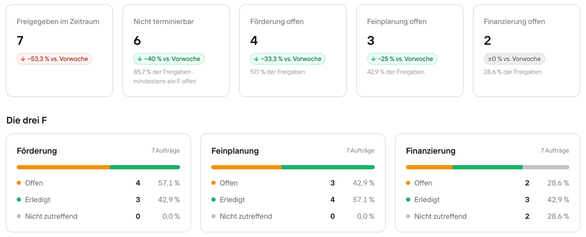
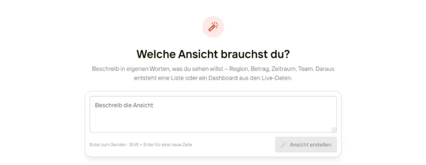

GALVANY sells heat pumps through sales partners. GALVANY OS is meant to replace Airtable for its own teams. Its Sales Portal is the part the partners work in, and every customer passes from one side to the other and back. I design all of it.
Outcome
GALVANY’s production design system is our developer’s version of mine. It took its brand colours from my OS prototype, and I made the ten design calls that were still open. The OS prototype itself is meant to become the spec the backend is built from.
My part
I lead product design at GALVANY, and its design system started with me. I own the prototypes, the Sales Portal included: what each team and each seller sees, and how a project moves between teams. On the teams’ side, I also own the interviews. I design in code with Claude Code: clickable prototypes on fictional, seeded data.
Built with
Next.js, React, TypeScript, Tailwind, Claude Code
Decisions
Keydecisions.
1/3
A rejection names the page
Back on the teams’ side, order review sits beside the signed offer: a seven-point checklist, each point with its page. It ends in a release, or a rejection with a reason. The seller sees it in the Sales Portal, so whoever fixes it doesn’t have to guess.
2/3
Gates before anyone installs
Nothing gets installed until its four gates are clear: subsidy, detailed planning, financing and the electrics. Every pipeline card shows them as check circles (the electrics joined later), so what’s blocking is visible at a glance.

3/3
A view starts with a sentence
In the OS, people describe the view they need in their own words: region, amount, period, team. It becomes a list or a dashboard on the live data, saved with their other views. To change it, they tell the AI what should change, or edit each part of the view directly.

More screens
The lead profile
The seller’s week
Every person, customer and record on these screens is fictional: the prototypes run on seeded mock data. Only the product names are GALVANY’s own.